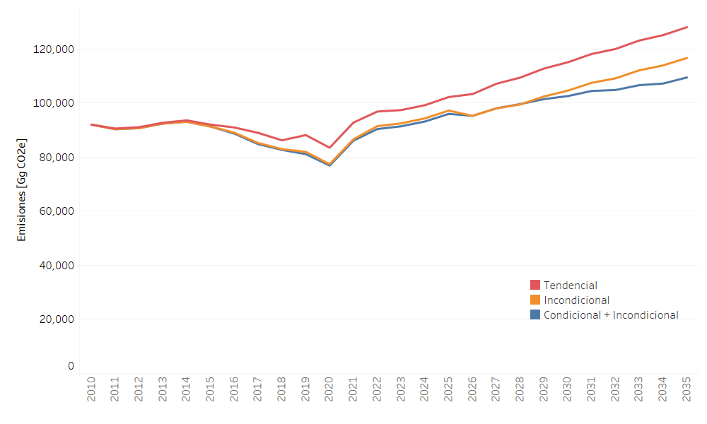

Emisiones Nacionales NDC
Las Emisiones Nacionales del Ecuador según las medidas analizadas en la NDC se observan en la Figura 1.

El análisis según tipo de gas para el escenario Incondicional se muestra en la Tabla 1.
Tipo de gas |
2023 |
2024 |
2025 |
2026 |
2027 |
2028 |
2029 |
2030 |
2031 |
2032 |
2033 |
2034 |
2035 |
|---|---|---|---|---|---|---|---|---|---|---|---|---|---|
CO2 |
25575.91 |
25440.22 |
25305.23 |
25174.06 |
25040.55 |
24906.57 |
24776.20 |
24644.70 |
24530.97 |
24421.47 |
24311.49 |
24207.81 |
24099.84 |
CH4 |
654.43 |
351.46 |
707.33 |
737.28 |
772.62 |
805.66 |
840.00 |
878.03 |
907.13 |
939.60 |
973.43 |
1007.97 |
1044.19 |
N2O |
13.87 |
14.67 |
14.98 |
15.71 |
16.35 |
16.91 |
17.45 |
18.02 |
18.37 |
18.91 |
19.47 |
19.96 |
20.45 |
HFCs |
2384.00 |
2810.30 |
3236.70 |
3583.80 |
3931.00 |
4278.10 |
4625.20 |
4998.50 |
4956.70 |
4914.90 |
4873.10 |
4831.30 |
4789.50 |
El análisis según tipo de gas para el escenario Condicional + Incondicional se muestra en la Tabla 2.
Tipo de gas |
2023 |
2024 |
2025 |
2026 |
2027 |
2028 |
2029 |
2030 |
2031 |
2032 |
2033 |
2034 |
2035 |
|---|---|---|---|---|---|---|---|---|---|---|---|---|---|
CO2 |
25575.91 |
25440.22 |
25305.23 |
25012.67 |
24879.28 |
24745.52 |
24774.42 |
24641.80 |
24526.99 |
24416.11 |
24304.83 |
24199.83 |
24091.23 |
CH4 |
625.31 |
652.70 |
676.00 |
704.90 |
739.05 |
770.85 |
793.42 |
827.66 |
852.86 |
881.35 |
912.45 |
945.25 |
979.66 |
N2O |
10.31 |
13.93 |
14.67 |
15.01 |
15.85 |
16.40 |
16.96 |
17.51 |
18.07 |
18.42 |
18.96 |
19.49 |
19.98 |
HFCs |
2384.00 |
2810.30 |
3236.70 |
3583.80 |
3931.00 |
4278.10 |
4625.20 |
4998.50 |
4956.70 |
4914.90 |
4873.10 |
4831.30 |
4789.50 |